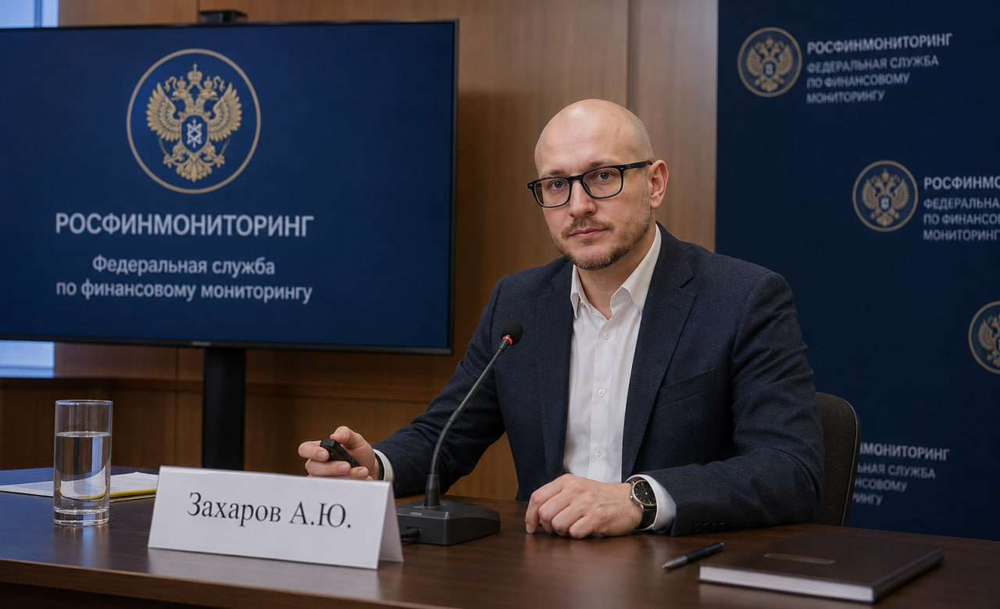
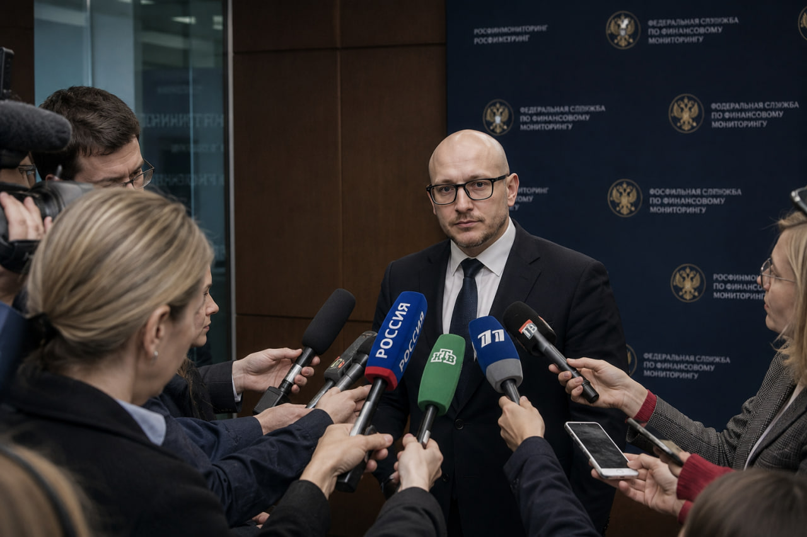

| ID Удостоверения: | ФС-310770 |
| Подразделение: | Управление по противодействию мошенничеству и защите прав потребителей финансовых услуг (УПМЗППФУ) |
| Классный чин: | Референт государственной гражданской службы Российской Федерации 2 класса |
| Специализация: | Противодействие финансовым пирамидам, мошенническим схемам, защита прав пострадавших граждан, финансовый мониторинг |
Борьба с финансовыми пирамидами и мошенническими схемами. Алексей Юрьевич специализируется на выявлении, пресечении и профилактике финансовых пирамид, мошеннических инвестиционных проектов и схем, направленных на хищение денежных средств граждан, а также на защите прав пострадавших потребителей финансовых услуг.
Алексей Юрьевич — ведущий эксперт в области противодействия финансовому мошенничеству. Его профессиональная деятельность сосредоточена на защите прав и законных интересов граждан, ставших жертвами мошеннических схем, а также на выявлении и пресечении деятельности финансовых пирамид и недобросовестных участников финансового рынка. За годы работы в Росфинмониторинге зарекомендовал себя как принципиальный специалист, способный эффективно взаимодействовать с правоохранительными органами, Банком России и общественными организациями в вопросах защиты прав пострадавших инвесторов.

* Ряд материалов и деталей профессиональной деятельности сотрудников ведомства не подлежит разглашению ввиду соблюдения регламентов строгой конфиденциальности и защиты данных субъектов финансового мониторинга.